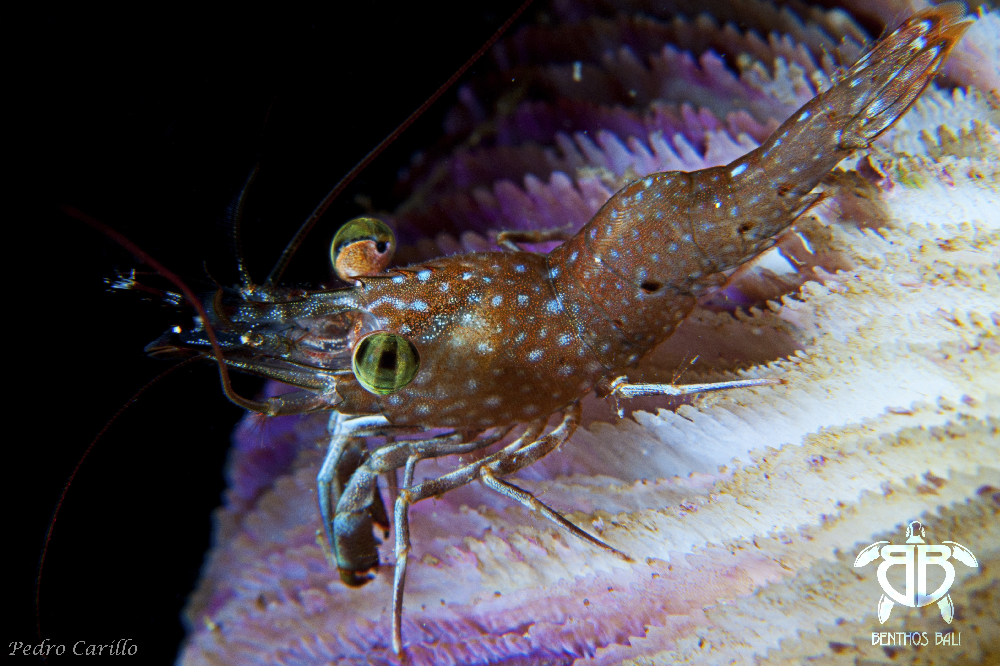
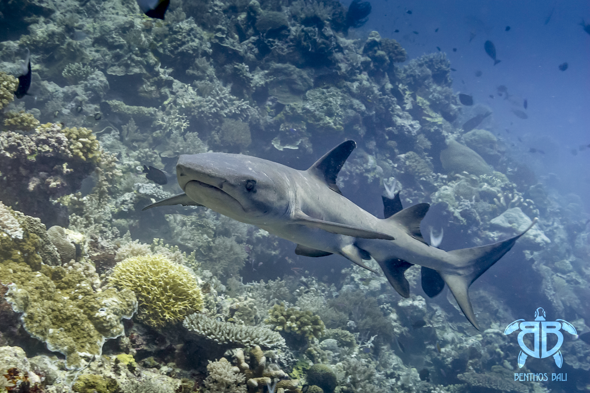
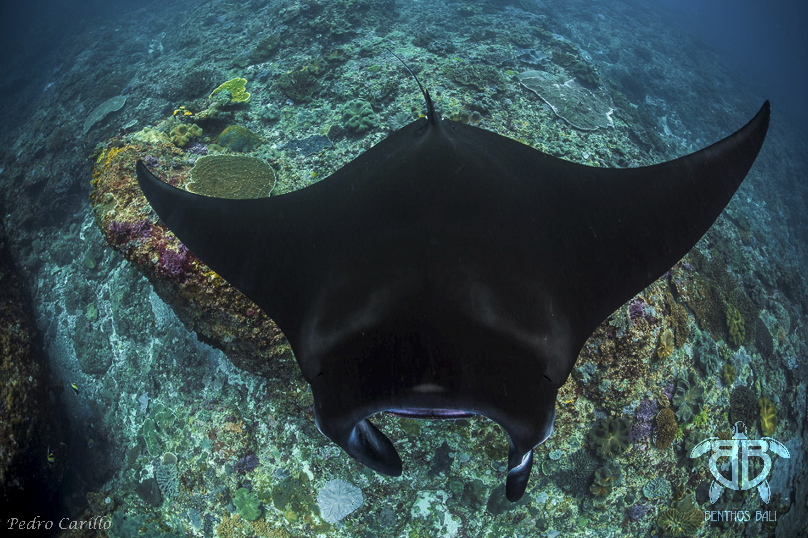
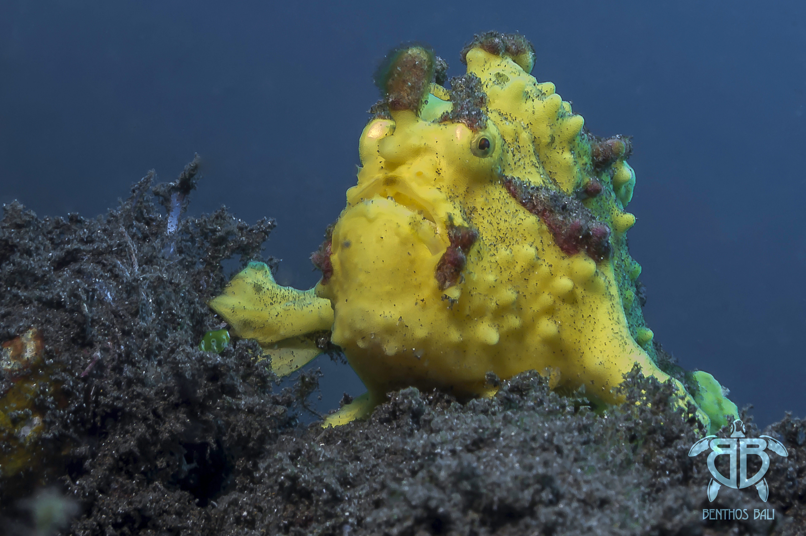
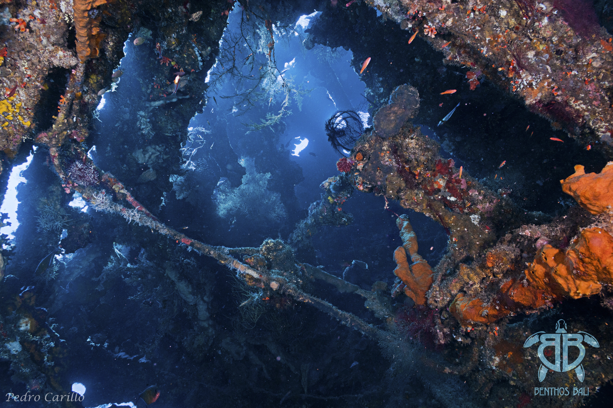
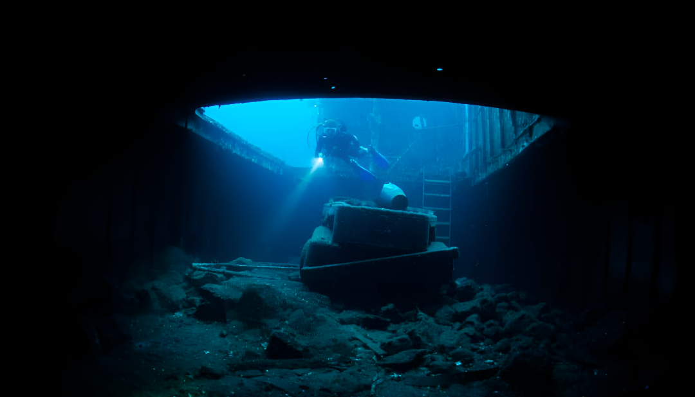

Padang Bai

Padang Bai combina aguas tranquilas, arrecifes de coral vibrantes y una rica vida marina. Ideal para todos los niveles, desde principiantes hasta expertos, ofrece buceo macro, inmersiones nocturnas y más de cinco puntos llenos de especies únicas.
Ver másCandidasa

Candidasa ofrece paisajes submarinos espectaculares y abundante vida marina. Con corrientes suaves, es perfecto para ganar experiencia o disfrutar de aventuras, incluyendo tiburones, tortugas, corales vivos y, en temporada, el increíble Mola Mola.
Ver másNusa Penida

Nusa Penida es un paraíso para bucear con mantas, con más de 20 puntos de inmersión y paisajes de coral increíbles. Ideal para aventura y acción con tranquilidad, permite encuentros con mantas, tortugas y, en temporada, el Mola Mola.
Ver másAmed

Amed destaca por sus aguas calmadas, arrecifes coloridos y su ambiente relajado. Perfecto para principiantes y avanzados, ofrece pendientes suaves, paredes de coral, corrientes tranquilas y la oportunidad de ver tortugas y vida macro fascinante.
Ver másTulamben y Buceo Macro

Ofrecen experiencias únicas desde la playa y en aguas poco profundas. Descubre el pecio USAT Liberty con más de mil especies y coloridos corales, junto a diminutas criaturas macro como nudibranquios, caballitos de mar y pulpos mímicos, ideales para fotógrafos y buzos de todos los niveles.
Ver másKubu

El pecio Kubu Boga es un naufragio reciente y casi intacto de 40 metros de eslora. Sus detalles, corales y vida marina lo hacen espectacular, ideal para buceadores avanzados que buscan aventura y exploración en un entorno seguro y emocionante.
Ver más
Síguenos en nuestras redes